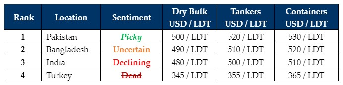

inWeekly Demolition Reports13/08/2024

The Middle East and global ship recycling markets need a serious push on the Pause button as this week the world has seen; increasing security bulletinssurrounding an imminent Iranian / Hezbollah threat against Israel, the U.S. repositioning 2 aircraft carrier / destroyer fleets off the Gulf of Oman & Eastern Mediterranean leaving the entire region on high alert, PM Sheikh Hassina abruptly resign as Prime Minister of Bangladesh and flee to India in a government helicopter, Indian steel prices nosedive into the nether, all ship recycling nation currencies devalue in unison against the U.S. Dollar again, and finally, witness the top placed ship recycling destination in the world i.e. Pakistan, report no fresh arrivals at its waterfront and have nothing to show for their firmer levels, which IS the tragic reality of ship recycling in 2024 today. It’s safe to say the world is in need of a serious break before a modicum of stability can return, not only for the sake of global peace but also for ship recycling so that our industry has a chance to revive its confidence and offer meaningful levels on fresh tonnage once again, especially as India and Bangladesh surprisingly report noteworthy arrivals at their respective waterfronts this week.
Ever since the unexpected results of India’s recently concluded General Elections, local steel plate prices have collapsed by nearly USD 60/Ton and reported even further declines this week that have now left most Alang offers on dry bulk units, firmly below USD 500/LDT and only slightly above USD 500/LDT on containers. Indeed, demand and pricing from Alang have been on an entirely new level of disappointment for over 6 weeks now, despite an overall positive (for the nation) Budget that has done little to disperse India’s gloomy ship recycling clouds. Making matters worse, with an additional 4, HKC compliant yards now recognized in Bangladesh, any of the slim pickings of HKC units that may come available could also be diverted away from Alang, despite an increasing number of Indian yards lying dormant over this summer / monsoon.
As such, despite tonnage offerings that remain abysmal, the resignation & departure of PM Hasina has seen jubilant scenes erupt across Bangladesh, in the face of recent violence & anger that became a staple through much of July. Now that the demands of the majority are being discussed and the domestically unpopular PM has abdicated her role, a greater degree of stability & eagerness to buy should be forthcoming from Chattogram, despite the ever-looming fears of a lack of U.S. Dollars in the country that could affect Bangladesh once again. Pakistan remains a dark horse; firm, yet passively unaggressive to fully capture the gravity of their position in the today’s market, ostensibly having the firmest prices on show even for units geographically suited for India. Turkey at the far end screams “reset” amidst its devastating silence and levels that finally fell USD 15/Ton.
For week 32 of 2024, GMS demo rankings / pricing for the week are as below.

📄 Download PDF: Ship-recycling-market-insight-Week-32-8-9-2024-Pause.pdfSource: GMS,Inc.https://www.gmsinc.net/gms_new/index.php/web